항공모함은 대체 어디에 (2) - 영화 '생존자들'의 재미있는 기술적 배경
게시: 2020-09-17T06:30:28+09:00
제2차 세계대전 당시에 연합군은 전파 기지국을 운용하여 군용기의 항법 계산에 활용했습니다. 그 자세한 이야기는 다음 주에 하는 것으로 하겠습니다만, 적의 공격에 항상 노출되는 군용기의 특성상 언제나 그런 전파 항법 장치에만 의존할 수는 없었습니다. 대공포나 적 전투기의 총탄에 수신기가 고장나는 일은 흔했습니다. 그런 경우에 대비해서 나폴레옹 시절에 하던 방식대로 육분의로 태양이나 별을 봐야 할 수도 있었습니다만, 그것도 항상 가능한 것은 아니었으니 기본적으로는 정해진 속도와 나침반에 따른 정해진 항로로 직진을 하면 일정 시각에 일정 장소에 다다르도록 추측 항법(dead reckoning)을 사용했습니다. 그래서 장거리 폭격기들의 항로를 보면 되도록 직선 항로를 유지하려 애썼습니다.
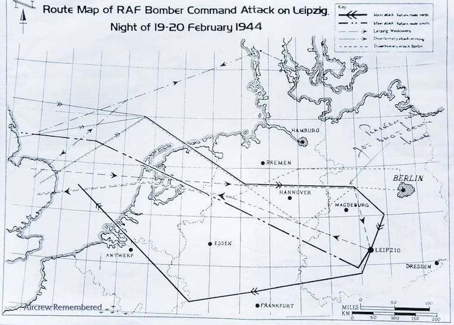
(1944년 2월 라이프치히를 폭격한 폭격기들의 항로입니다. 곡선이 아니라 직선입니다.)
그런데 문제가 있었습니다. 지상과 달리 하늘에서는 끊임없이 바람이 불었습니다. 폭격기는 직진을 한답시고 가는데, 측풍으로 인해 오른쪽으로 5도 빗나가는 일, 즉 드리프트(drift)는 항상 일어났습니다. 측풍만 문제가 되는 것이 아니었습니다. 맞바람이나 뒷바람도 문제를 일으켰습니다. 폭격기의 속도계에는 시속 300km라고 나와 있더라도, 그건 바람 속에서의 상대적인 속도였을 뿐, 만약 맞바람을 맞고 있다면 지상에서 볼 때 폭격기의 속도는 280km일 수도 있었습니다. 이를 대지 속도(ground speed)라고 합니다. 따라서, 추측 항법에만 의존하면 정해진 시간에 라이프치히 상공에 도착해야 하는데 실제로는 드레스덴 상공에 와있는 경우도 있일 수 있었습니다. 어떻게든 항공기의 드리프팅 각도와 대지 속도를 측정하여 그 오차를 교정해야 했습니다. 그래서 나온 것이 바로 드리프트 미터(drift meter)입니다.
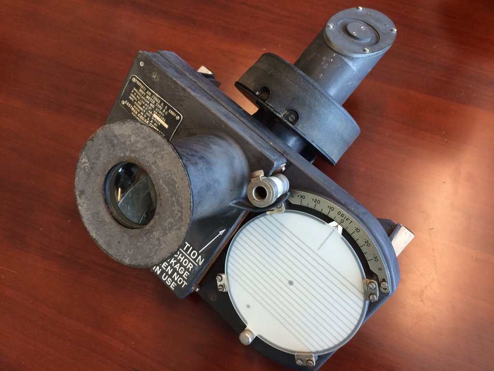
(Kodak 사에서 만든 B-5 drift meter입니다. 눈금이 새겨진 조준경과 포인터, 그리고 그 포인터에 기계적으로 연결된 연필과 종이판으로 구성되어 있습니다.)
이 드리프트 미터기는 크게 2가지 역할을 했습니다. 하나는 항공기가 진행 방향에서 얼마나 좌우로 벗어나는지, 즉 드리프팅하고 있는지 그 각도를 재는 것이었고, 다른 하나는 항공기의 실제 대지 속도(ground speed)를 측정하는 것이었습니다. 그 사용법에 대해서는 아래 유튜브에 자세히 나와 있습니다만, (저처럼) 동영상 보는 것을 싫어하시는 분을 위해 간략히 요약하면 아래와 같습니다.

www.youtube.com/watch?v=nthSD3tNVxw 1) 드리프팅 각도 측정 방법 B-5 drift meter의 조준경을 통해 지상의 목표물 하나를 찍고 거기에 기계식 포인터를 갖다댄 뒤 꾹 눌러 줍니다. 이 드리프트 미터는 항공기의 측면을 보게 되어 있으므로 항공기가 날아가면 지상 목표물은 자연스럽게 뒤로 흘러가게 되는데, 기계식 포인터는 관측병이 손으로 누른 채 목표물을 따라 움직이도록 해야 합니다. 이 기계식 포인터는 조준경 옆에 붙어있는 둥근 흰색 종이판 위의 연필과 금속 막대기를 통해 연결되어 있습니다. 따라서 포인터로 지상 목표물을 가리키며 누르고 있으면 연필이 종이 위에 그 궤적을 남기게 됩니다.
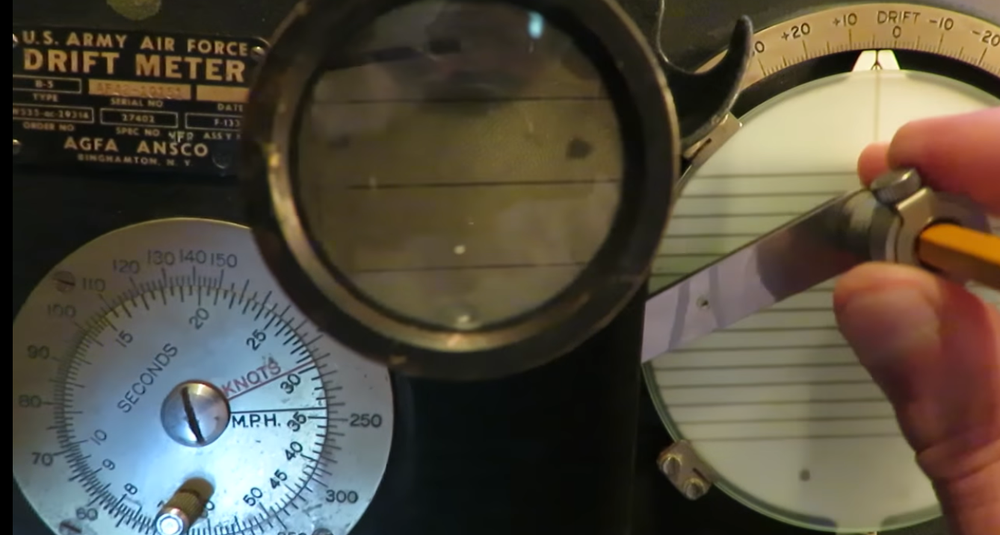 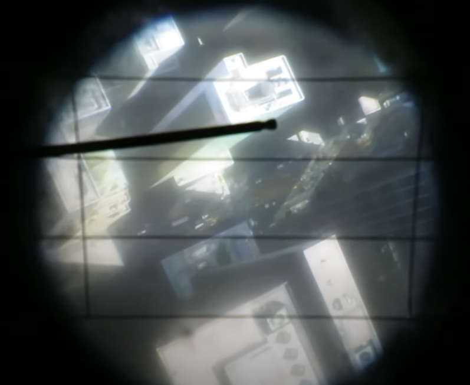 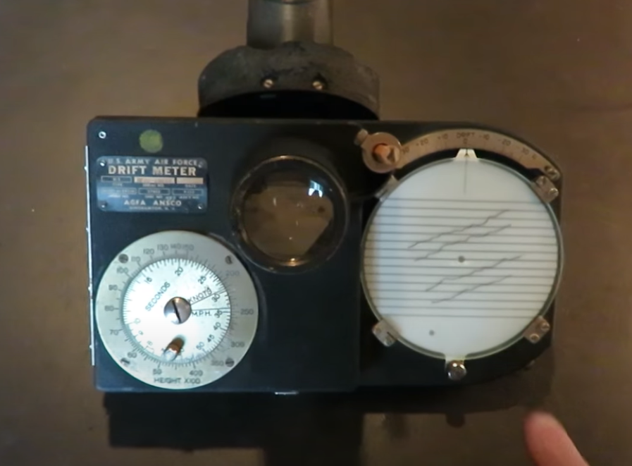
그 다음으로는 종이 위에 가로줄이 그어진 유리판을 겹칩니다. 만약 연필로 그어진 궤적이 이 가로줄과 일치하지 않으면 현재 측풍으로 인해 드리프팅이 일어나고 있는 것입니다. 이 둥근 유리판을 회전시켜 종이판 위의 궤적과 일치시키면, 회전판 가장자리에 새겨진 각도를 읽어 드리프팅 각도를 측정할 수 있는 것입니다. 간단하면서도 기발하지요 ?
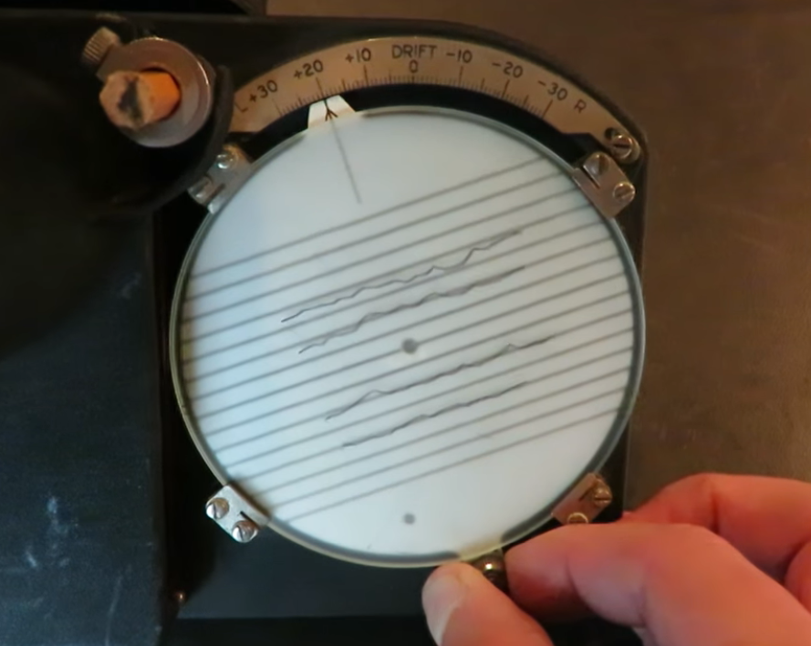
(드리프트 각도는 +20도네요.)
2) 대지 속도 측정 방법 이건 더 간단합니다. 위 사진에서 조준경을 보면 좌우에 하나씩 세로줄이 그어져 있습니다. 지상의 목표물이 조준경의 오른쪽 세로줄을 통과할 때부터 왼쪽 세로줄을 통과할 때까지의 시간을 재면 됩니다. 가령 그 시간이 7초라고 하면, 이 드리프트 미터의 왼쪽에 붙은 다이얼식 수동 계산기에 그 7초라는 시간과, 항공기 고도계에서 읽은 항공기의 고도를 다이얼을 돌려 입력하면 대지 속도가 자동으로 계산되는 것입니다. 관측병은 그 대지 속도를 이 수동 계산기의 다이얼에서 읽어내기만 하면 됩니다. 정말 쉽습니다.
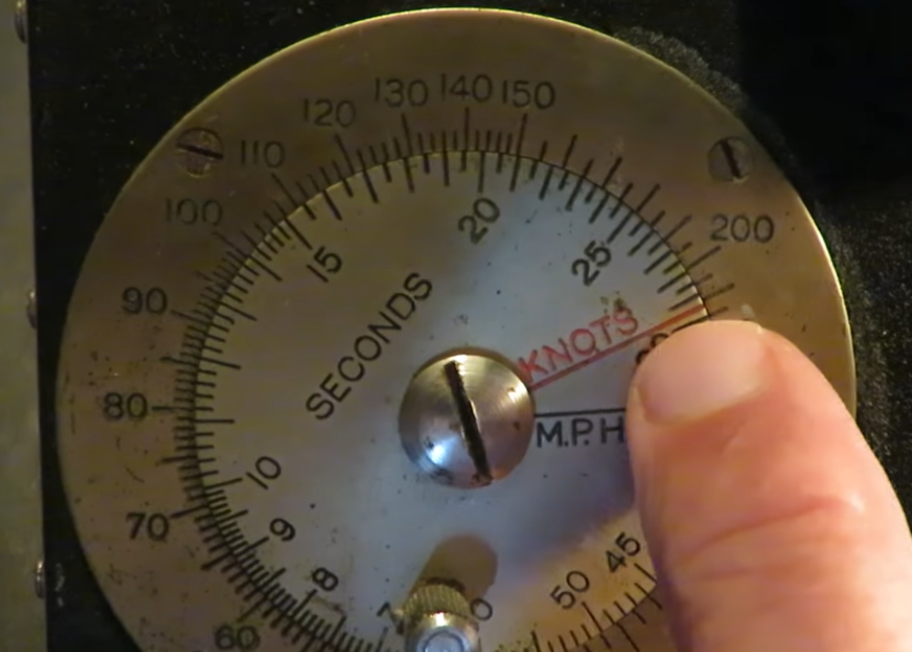
이제 지난 편에서 조종사와 폭격수가 나눈 이상한 대화를 다시 반복해보겠습니다. --------------------------------------- 기장: 아주 잘 들려, 친구들. (Loud and clear, boys.) 그냥 어느 방향으로 바람이 부는지 보려고 기다리고 있었어 (Just waiting for this wind to tell me which direction she wants to blow). 파스툴라 (폭격수), 드리프트 조준경 한번 더 봐주게 (take another drift sight.) 파도를 보니까 방향이 좀 잘못된 것 같아 (That's not how I'm reading those wave tops). 폭격수: 예, 기장님. (뭔가 아래 쪽을 향한 조준경을 들여다보더니) 15도요. 출격할 때와 똑같은 측정값입니다 (Same read as the outbound), 기장님. 기장: 그게 맞다면 우리 항모는 동쪽에 있는 거쟎아 (If that's correct, she's off to the east). 난 서쪽에 있는 줄 알았는데 (I had her west). 동쪽에 있는 것으로 가겠다. (I'm taking her east.) ----------------------------------------
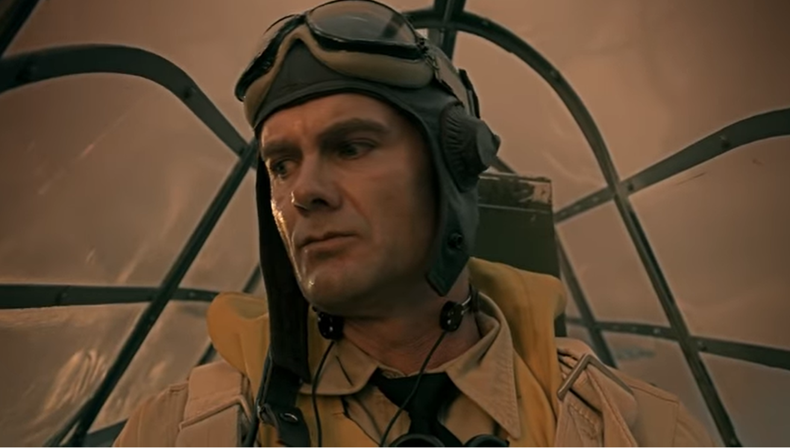
(영화를 보면 조종사가 오른쪽 아래의 뭔가를 슬쩍 보고는 드리프트 미터를 다시 봐달라고 하지요. 조종사는 파도의 방향을 보고 여태까지 측정했던 측풍이 좀 잘못된 것 아닌가 하고 생각했던 것입니다.)
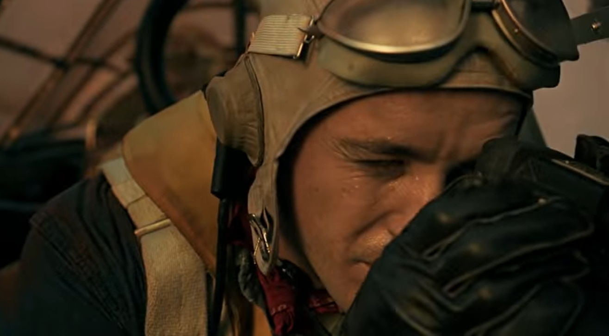 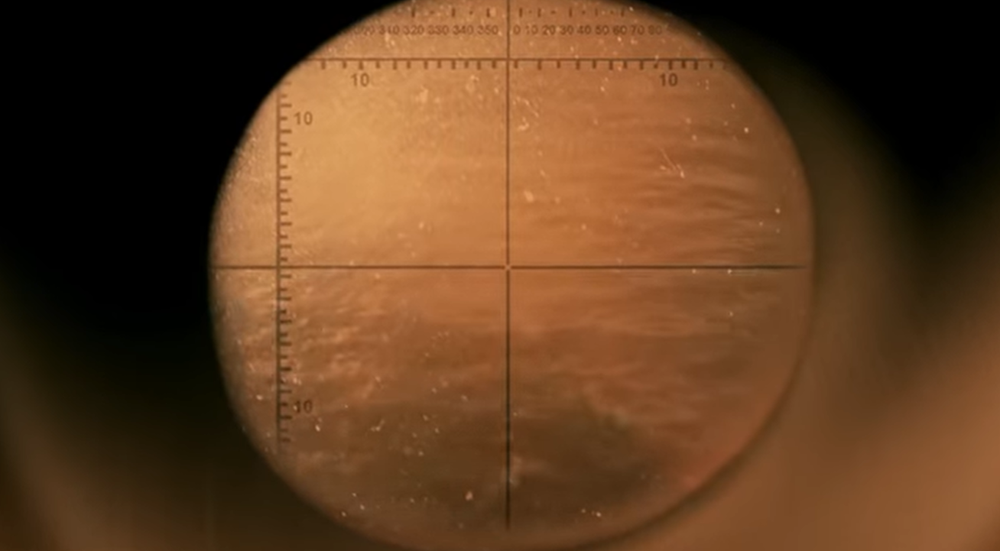
대충 저 사람들이 뭘 이야기하고 있는 것인지 짐작이 가시지요 ? 다만 문제가 있습니다. 여기는 망망대해라서 건물도 없고 나무도 없습니다. 그런데 뭘 목표물로 삼아 드리프트 미터를 보는 것일까요 ? 이건 저 대화를 듣고 제가 짐작하는 것에 불과합니다만, 파도의 꼭대기 (wave top)를 목표물로 삼는 것 같습니다. 시속 수백 km로 날아가는 항공기에서 보면 파도의 움직임은 상대적으로 정적이니까요. 그런데 파도가 하나도 없는 잔잔한 바다라면 어떻게 하지요 ? 생각해보면 그것도 딱히 걱정하지 않아도 될 듯 합니다. 바람이 없다면 드리프트도 없을테니까요 !
(영화 속의 3인과 실제 구조된 3인의 모습입니다.)
PS. (여기서부터는 스포일러) 그나저나 저 3명이 탄 Devastator 뇌격기는 저런 Hayrake 시스템과 drift meter를 가지고도 어쩌다 길을 잃게 되었을까요 ? 영화 내내 조종사는 길을 잃은 것에 대해 다른 승무원들이 자신을 비난할까 전전긍긍하는 모습을 보입니다. 영화 막판에 조종사가 실토하는데, 실은 조종사가 비행 중에 깜빡 졸았던 거에요. 그래서 길을 잃은 것이고, 저 위 대사에서 '파도를 보고 있었다'라는 것이 거짓말이었던 것이지요. 이렇게 실토한 조종사 딕슨 상사는 승무원들에게 '난 구조되더라도 소중한 뇌격기를 잃은 죄에 대해 군법회의를 받게 될 것'이라고 자책합니다. 그러나 실제로는 승무원들을 데리고 불굴의 의지로 살아남은 것에 대해 무공훈장을 받습니다. 대신 비행 임무에서는 배제 되지요. 따지고 보면 어차피 저 Devastator 뇌격기는 하도 성능이 좋지 않아서 같은 해인 1942년에 전량 퇴역시킵니다. 따라서 미해군으로서도 별로 아깝지는 않았을 거에요.
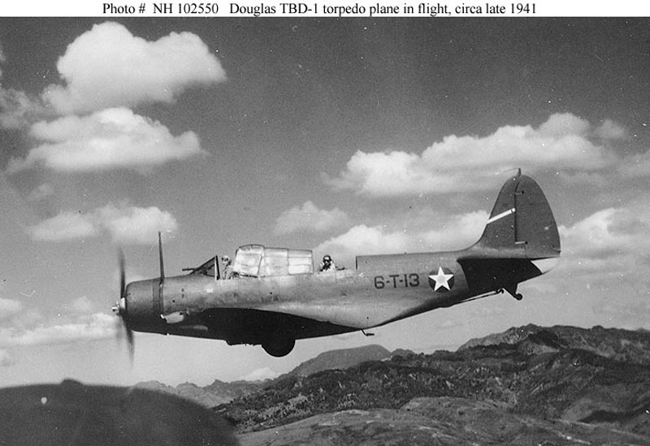 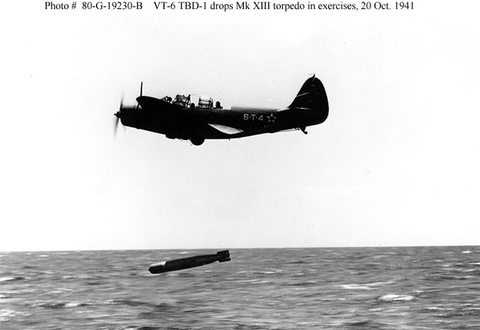
Source : en.wikipedia.org/wiki/Drift_meter
www.youtube.com/watch?v=nthSD3tNVxw
timeandnavigation.si.edu/navigating-air/challenges/overcoming-challenges/celestial-navigation
aeroantique.com/products/drift-meter-type-b-5-kodak?variant=24971059271